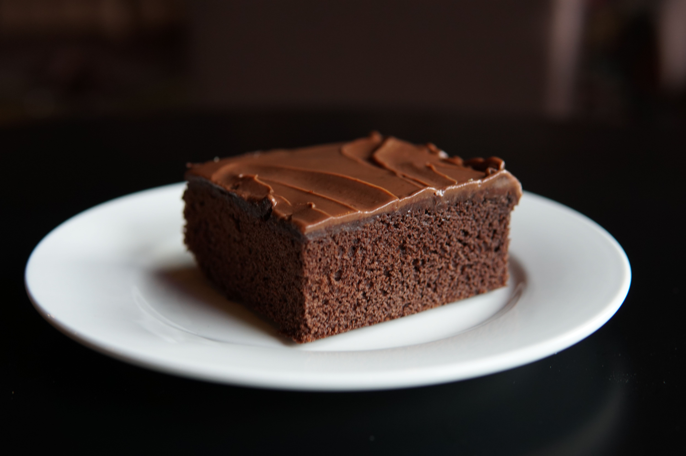

Texas Sheet Cake

This chocolate cake is usually flat and baked on a baking sheet hence the name sheet cake.
Ingredients
Cake:
- 2 cups all-purpose flour
- 2 cups white sugar
- 1 teaspoon baking soda
- ½ teaspoon salt
- ½ cup sour cream
- 2 eggs
- 1 cup butter
- 1 cup water
- 5 tablespoons unsweetened cocoa powder
Icing:
- 6 tablespoons milk
- 5 tablespoons unsweetened cocoa powder
- ½ cup butter
- 4 cups confectioners' sugar
- 1 teaspoon vanilla extract
- 1 cup chopped walnuts (Optional)
Directions
- Gather all ingredients.
- Preheat the oven to 350 degrees F (175 degrees C). Grease and flour a 10x15-inch jelly roll pan.
- To make the cake: Combine flour, sugar, baking soda, and salt in a mixing bowl. Beat in sour cream and eggs.
- Melt butter in a saucepan over low heat. Stir in water and cocoa powder. Bring mixture to a boil then remove from the heat.
- Allow to cool slightly, then stir cocoa mixture into the flour and egg mixture until blended. Pour batter into the prepared pan.
- Bake in the preheated oven until a toothpick inserted into the center comes out clean, about 20 minutes. While the cake is baking, make icing: Combine milk, cocoa powder, and butter in a large saucepan over medium heat.
- Bring to a boil, then remove from heat. Stir in confectioners' sugar and vanilla, then fold in walnuts, mixing until blended.
- Spread icing over warm cake.
- Serve and enjoy!
Home